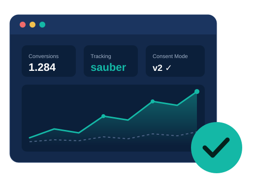
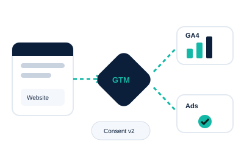
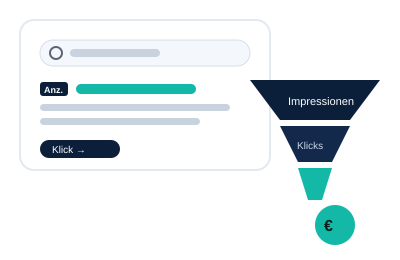
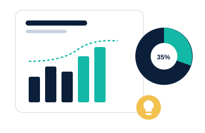

Saubere Daten.
Bessere Entscheidungen.

Ich bin David, Online Marketer aus dem Münsterland mit Fokus auf Tracking, Google Ads und Analysen. Ich helfe Online-Shops und KMU, richtig zu messen, gezielt zu werben und ihre Zahlen zu verstehen.

Drei Dinge, bei denen ich dir helfe
Alles hängt zusammen: Wer sauber misst, kann gezielt werben und versteht, was wirklich wirkt.

1 · MessenTracking, das stimmt
GA4, Google Tag Manager, Consent Mode v2 und Conversions, geprüft oder neu aufgebaut.
Tracking-Check & Setup →
2 · WerbenSichtbar werden
Google Ads sauber eingerichtet und ein Google-Unternehmensprofil, das lokal gefunden wird.
Google Ads & Unternehmensprofil →
3 · VerstehenZahlen, die etwas sagen
Dashboards und Analysen mit klaren Empfehlungen statt Datenfriedhof.
Analysen & Dashboards →Warum das wichtig ist
Du zahlst für Google Ads, aber stimmen deine Daten überhaupt? In vielen Accounts, die ich mir anschaue, ist das Tracking lückenhaft. Das fällt selten auf, die Zahlen sehen ja plausibel aus. Aber Google Ads trifft seine Entscheidungen genau auf Basis dieser Zahlen.
Käufe doppelt gezählt
Das Purchase-Event feuert zweimal. Google Ads glaubt, die Kampagne läuft doppelt so gut, und steckt mehr Budget hinein.
Conversions fehlen
Anfragen oder Bestellungen kommen gar nicht an. Gute Kampagnen sehen schlecht aus und werden abgeschaltet.
Consent Mode falsch
Tags feuern vor der Einwilligung oder gar nicht. Beides kostet dich Daten oder bringt dich in Konflikt mit der DSGVO.
Alle Leistungen
Vom schnellen Check bis zum kompletten Neuaufbau, jeweils zum Festpreis.
Tracking-Check
Ich prüfe GA4, Tag Manager, Consent Mode v2 und deine Conversions, mit Ampel-Report.
ab 490 €Mehr erfahren →Tracking-Setup von Grund auf
GA4, Google Tag Manager, Consent Mode v2 und Conversions, sauber neu aufgebaut und dokumentiert.
ab 990 €Mehr erfahren →Google Ads einrichten
Konto, Conversion-Tracking und erste Kampagnen, von Anfang an strukturiert statt später aufgeräumt.
ab 690 €Mehr erfahren →Analysen & Dashboards
Looker-Studio-Dashboards und Auswertungen, die zeigen, was funktioniert und was nicht.
ab 290 €Mehr erfahren →Google-Unternehmensprofil
Für lokale Betriebe: bei Google Maps gefunden werden. Eingerichtet, optimiert, übergeben.
ab 129 €Mehr erfahren →Über mich
Seit 14 Jahren arbeite ich im Online-Marketing, in Agenturen und bei mittelständischen Unternehmen. Heute liegt mein Schwerpunkt auf Google Ads, Tracking, Shopware 6 und KI im E-Commerce. Dabei sehe ich immer wieder: Die Kampagnen sind gut gebaut, aber die Daten darunter stimmen nicht.
- 14 Jahre Berufserfahrung im Online-Marketing
- Studium Medienwirtschaft & Medienmanagement (B.A.)
- Ausbildung zum Mediengestalter Digital und Print
- Applied Online Marketing Manager Advanced (ecomex, 2023)
- Online Marketing Manager IHK (IHK Nord Westfalen)
- Google Analytics Zertifizierung
So läuft es ab
15 Minuten per Telefon oder Videocall: Was nutzt du, wo hakt es?
Ein klares Angebot ohne Stundenzettel und Überraschungen.
Ich setze um, dokumentiere verständlich und erkläre dir, was wo läuft.
Lass uns kurz drüber sprechen.
15 Minuten, kostenlos, unverbindlich. Ich sage dir ehrlich, ob ein Tracking-Check bei dir Sinn ergibt.